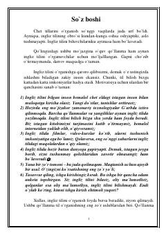

1FMeta-ta'lim texnologiyalari orqali ingliz tilini tez va oson o'rganish bo'yicha qo'llanma.
Ushbu o'quv qo'llanma meta-ta'lim texnologiyalari asosida ingliz tilini tez va samarali o'rganishga yordam beradi. Kitobda uch oy ichida ingliz tilida so'zlashish, o'qish va yozish ko'nikmalarini shakllantirish usullari bayon etilgan.